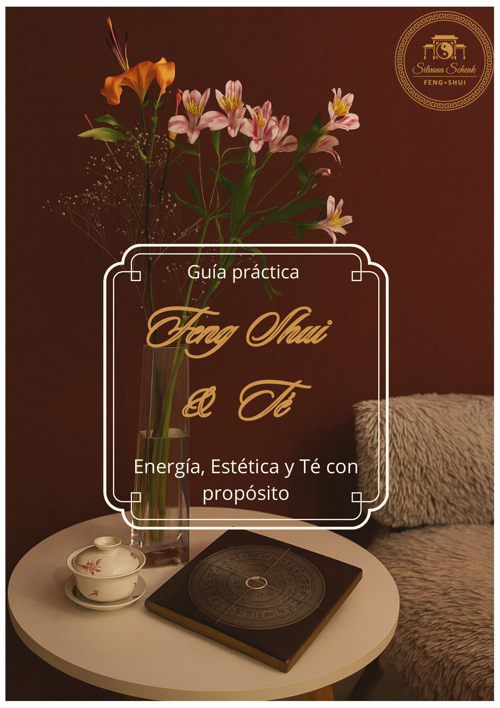

El té me enseñó a escuchar el silencio.
El mate, a compartir el alma.
El Feng Shui, a dejar fluir la energía.
Te invito a transitar juntos estos tres caminos hacia la armonía, para que descubras el poder de los pequeños rituales que cambiaran tu vida.

¡Bienvenido a la experiencia de formarte en el fascinante mundo del té!
Nuestros cursos de nivel básico están diseñados especialmente para que puedas comenzar desde
cero: no necesitas conocimientos previos.
Aquí, el té te invita a entrar en contacto contigo y a
descubrir la belleza de escuchar el silencio.
Aprenderás a tu propio ritmo, con 4 módulos y 20 clases en total. Al finalizar cada módulo, realizarás una autoevaluación “multiple choice” para consolidar lo aprendido.
Recibirás material exclusivo en PDF que te acompañará durante todo el curso.
Al finalizar, te otorgamos un certificado de participación que reconoce tu dedicación.
Modalidad 100% online: accedes desde donde quieras y a la hora que prefieras.
Más información
Temario:
Módulo 1
Clase 1: Historia del té
Clase 2: La planta de té
Clase 3: Países productores
Clase 4: Variedades de tés puros
Clase 5: Blends famosos
Módulo 2
Clase 6: Cómo preparar un té correctamente
Clase 7: Cómo catar un té
Clase 8: Rueda de aromas
Clase 9: Paladares y perfiles de té
Clase 10: Maridar con té
Módulo 3
Clase 11: Concepto de protocolo y ceremonial
Clase 12: Protocolo francés, americano y ruso
Clase 13: Claves ser un buen anfitrión
Clase 14: Qué vajilla utilizar en cada servicio
Clase 15: Tipología de teteras
Módulo 4
Clase 16: Infusiones y tisanas
Clase 17: Secretos del ice tea
Clase 18: Bebidas & cocteles
Clase 19: Recetas con tés
Clase 20: Cómo organizar tu evento de té

¡Descubre el auténtico ritual argentino y conviértete en un especialista del mate! Nuestro curso online está pensado para que todos puedan iniciarse: no necesitas conocimientos previos.
MI PRIMER MATE logra la expertise en el arte del mate, desde sus orígenes hasta los secretos para prepararlo y compartirlo en una experiencia única.
Formación estructurada en 10 clases, a tu ritmo y desde donde estés.
Material de apoyo en PDF para acompañar tu aprendizaje.
Material audiovisual.
Certificado de participación al completar el curso.
Modalidad 100% online: accede desde cualquier lugar, a cualquier hora.
CONVERTITE EN UN ESPECIALISTA DEL MATE ARGENTINO
Más información
Temario:
Clase 1: Historia de la YM.
Clase 2: Botánica de la YM.
Clase 3 y 4: Zonas de cultivo y producción.
Clase 5: Componentes de la YM.
Clase 6: 4 pasos para preparar el mate.
Clase 7: Tipos de mate.
Clase 8: Cómo se "cura" un mate.
Clase 9: El ritual del mate.
Clase 10: Meditación.

Vive la experiencia más completa y de profunda transformación personal:
el curso Feng Shui & Té – Método Schenk.
Una invitación a descubrir la sabiduría ancestral integrando el arte del Feng Shui y el Tao del té
para crear armonía, disfrute y plenitud en tu vida y tus espacios.
Descubre cómo tu energía y tu
entorno están conectados, y cómo el té puede ser tu aliado en este camino de autoconocimiento.
Aprende a reconocer que tu hogar es una extensión de tu alma. Integra principios del Feng Shui a
tu decoración y crea ambientes que reflejen tu verdadera esencia.
Educa tu paladar y despierta tus sentidos a través del análisis sensorial, maridajes y recetas
exclusivas con té.
Este curso es un blend único, creado bajo el exclusivo método Schenk. No es solo aprendizaje.
Es transformación, es disfrute, es una nueva forma de vivir y crear espacios que te representen y te
inspiren día a día.
Atrévete a reinventar tu vida y tu hogar en cada taza y en cada rincón.
Más información
ENERGÍA "La sabiduría ancestral”
Introducción los conceptos claves del Feng Shui relacionando la energía vital (Chi), los principios del Yin y Yang, y la sabiduría que conecta a las antiguas tradiciones orientales con la práctica ceremonial del té. Aprende cómo la energía fluye en tu entorno y cómo el té inspira equilibrio y bienestar.
- ¿Qué es el Feng Shui?
- El misterio del Feng Shui
- Historia del Feng Shui
- El Feng Shui en la actualidad
- El camino del té
- El Teísmo
- El gran maestro del Té
- Teoría de los 5 Elementos y sus cualidades
- El Chi
- El Yin & Yang
- Animales celestiales y las energías del Té
ESTÉTICA - "Conocerte para habitarte en paz"
Aquí descubrirás cómo la estética y el Feng Shui tienen una dimensión profundamente sensorial y emocional. Desde el significado de tu número Kua hasta las texturas, colores y el arte de preparar el té, este capítulo te invita a crear ambientesb armoniosos y rituales de belleza diaria, explorando cómo las emociones, los sentidos y los elementos se expresan en las hebras y en tu hogar.
- Tu número Kua
- La boca del Chi
- La planta del té y sus variedades
- Cómo preparar correctamente un té: agua, temperatura, utensilios
- Tipología de teteras
- Técnicas de infusión
- Las 5 energías del té según su sabor
-La cocina y a cata de emociones
-Decorar con intención
TÉ CON PROPÓSITO "Tu hogar, una extensión de tu alma"
Este capítulo te invita a crear experiencias significativas con el té como eje. Desde cómo disponer y decorar tu espacio de té, pasando por la creación de blends en función de los momentos y las emociones, hasta la integración de infusiones y rituales inspirados en la medicina china, aquí aprenderás a transformar tu entorno y tu vida cotidiana a través del propósito y la intención.
- Armonización de las Casas de Té
- Elementos, colores y formas
- Ceremonial y protocolo en el servicio de té
-Anfitrión de té
- Blend emocional: infusiones + momentos del día
- Blends famosos
- El té y el vínculo con el Feng Shui desde la medicina tradicional china
Fechas Favorables:
Las fechas auspiciosas permiten alinear tus actividades importantes (mudanzas, inicios de proyectos, ceremonias, plantación de jardines) con el flujo energético positivo del calendario oriental. Consulta cómo personalizar tus fechas favorables según tu carta Ba Zi para vibrar de manera más armónica con tu entorno.
*Diseño de Jardín Zen:
Crea tu propio rincón sagrado en casa. El paisajismo Feng Shui y la historia de los jardines sagrados te inspirarán a diseñar un jardín zen que promueva la contemplación y el bienestar. Investiga sobre la importancia del agua, la disposición de plantas y piedras, y la creación de espacios exteriores que eleven tu espíritu.
¡El próximo descubrimiento depende de ti!

Inscríbete hoy y vive la cultura del mate desde adentro!
Sumérgete en una experiencia única y transformadora con nuestra
Mate Ceremony Experience.
Te recibimos con un exquisito cóctel de yerba mate para abrir los sentidos y celebrar el encuentro. Disfrutarás de una degustación guiada de yerbas argentinas, viajando por los matices y aromas de esta tradición emblemática. Te sorprenderemos con un maridaje cuidadosamente seleccionado, adaptado a la temporada, que realza los sabores auténticos del mate.
El corazón de esta ceremonia es el espacio de meditación y ritual de iniciación al mate, donde conectarás con la esencia de esta bebida ancestral y descubrirás cómo el mate puede convertirse en tu propio momento de pausa, encuentro y renovación.
Vive, siente y celebra el ritual del mate de una forma nunca antes experimentada. Reserva tu lugar y déjate guiar por la magia y la cultura del mate argentino!
Para un máximo de 6 personas
Comprar ahora